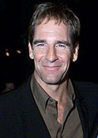
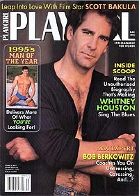
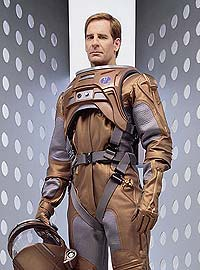

|
Bakula:
galgando as escada do poder?
 Pelo
clima que est sendo criado em torno de Enterprise para
seu lanamento, ningum ousa dizer que a srie no ser um
sucesso. Nela vo as esperanas de sobrevivncia de um
franchise de 35 anos por mais pelo menos sete anos. No pouca
responsabilidade. Pelo
clima que est sendo criado em torno de Enterprise para
seu lanamento, ningum ousa dizer que a srie no ser um
sucesso. Nela vo as esperanas de sobrevivncia de um
franchise de 35 anos por mais pelo menos sete anos. No pouca
responsabilidade.
 Rick
Berman e Brannon Braga sofreram intensos ataques de dentro e de
fora de sua equipe enquanto produziam Voyager, seriado que
deu a Jornada nas Estrelas um aspecto "menor", se
comparado ao sucesso de pblico obtido por A Nova Gerao
e o de crtica alcanado por Deep Space Nine. A dupla de
produtores-executivos precisava transmitir uma imagem de
rompimento com o status quo em Enterprise. "Ei, olhem
para ns, dessa vez vai ser diferente!", diziam eles ao pblico.
Vrias atitudes vindas da altas esferas da produo tentaram
imprimir essa nova caracterstica srie, incluindo a mudana
de visual, de sculo, de personagens, de trilha sonora, de
abertura etc. Mas provavelmente a cartada mais forte da Paramount
para deixar Enterprise em boa situao com o pblico e
com a imprensa foi a contratao de Scott Bakula para
protagonista da srie, interpretando o capito Jonathan Archer.
 A
presena de Bakula traz vrios pontos para a nova produo.
Entre os mais bvios esto o sucesso que o ator faz com o pblico
feminino (sempre bem inferior ao masculino em se tratando de Jornada
nas Estrelas) e a sinalizao por parte dos produtores de
que eles esto dispostos a contratar grandes atores para sua srie.
Mas Bakula est muito longe de ser apenas uma pea publicitria
para o franchise.
O ator j demonstrou, ao longo das vrias entrevistas que deu
antes da estria da srie, que s aceitou o papel aps se
certificar de que seria algo especial --o que por si s j
demonstra que Bakula no ficar apenas sentado deixando os
roteiristas escreverem o que quiserem. Ele deve participar
ativamente, vetando, aprovando e sugerindo idias para
incrementar a srie.
A liderana de Bakula fora das cmeras ecoada por todos os
outros atores do elenco. Todos eles so unnimes em dizer que o
ex-Leaper traz grande senso de companheirismo, unio e clima
amistoso para toda a equipe. John Billingsley chegou a relatar o
entusiasmo de Bakula para obter a melhor tomada enquanto vestia
sua roupa de astronauta, mesmo quando custaria a ele um tremendo
sacrifcio fsico. "Vamos fazer de novo, acho que posso
sacar minha pistola um pouco mais devagar", disse Bakula na
ocasio ao diretor.
 E
por falar em direo, o prprio ator j admitiu que teria
interesse em dirigir episdios da srie futuramente, embora
nesta primeira temporada esteja querendo apenas se concentrar em
seu personagem. Bakula demonstra um grande respeito por Rick
Berman e Brannon Braga, pessoas que se mostraram totalmente
abertas para ouvi-lo. No soa como uma relao patro-empregado,
mas muito mais como um clima de sociedade.
Claramente, ao longo da srie, Bakula se tornar cada vez mais
importante no contexto da produo. Ele est comeando como
protagonista dedicado e promotor principal da srie junto
imprensa e ao pblico, mas j d mostras de que no ir parar
por a.
Em contrapartida, Berman e Braga esto visivelmente cansados de
Jornada nas Estrelas. Aparentemente a nova ambientao de Enterprise
deu aos dois sangue novo, mas incerto que eles permaneam com
esse mesmo nimo pelos prximos anos. Por conta disso, no
um disparate pensar que a Paramount precisar, mais cedo ou mais
tarde, de novos chefes para o franchise.
Normalmente eles viriam da prpria equipe criativa da srie, ou
seja, dos roteiristas. Foi assim que Brannon Braga, e antes dele,
Michael Piller, Jeri Taylor, Ira Steven Behr e Kenneth Biller
subiram pelos escales do poder no franchise. Mas no impensvel
a possibilidade de desta vez o posto estar sendo sutilmente
passado a Scott Bakula.
Carisma juntos aos fs ele tem de sobra, e ser muito difcil
que ele perca isso nos prximos anos. Conhecimento prvio de fico
cientfica tambm no lhe falta, depois de cinco temporadas de
"Quantum Leap" e uma possvel preparao durante as
primeiras temporadas de Enterprise. Capacidade criativa e
senso de liderana no farecem lhe faltar. Seria Bakula o
sucessor de Rick Berman no comando do franchise?
Ningum sabe se e quando Berman deixar seu trono, e se Braga
acabar ficando por mais tempo no franchise, mas todos podem
estar certos que Bakula ao menos um candidato. E um que
apresenta a seus oponentes uma grande vantagem --ele no poder
ser simplesmente eliminado da srie, como poderia ser feito com
um roteirista qualquer. Isso traria o risco de alienar os fs e
levar o programa ao fracasso.
Os trunfos ele tem. Resta saber se tambm h a ambio e a
vontade. S o tempo dir.
Salvador
Nogueira, jornalista, escreve regularmente
sobre
a nova srie de Jornada nas Estrelas para o Trek
Brasilis
|